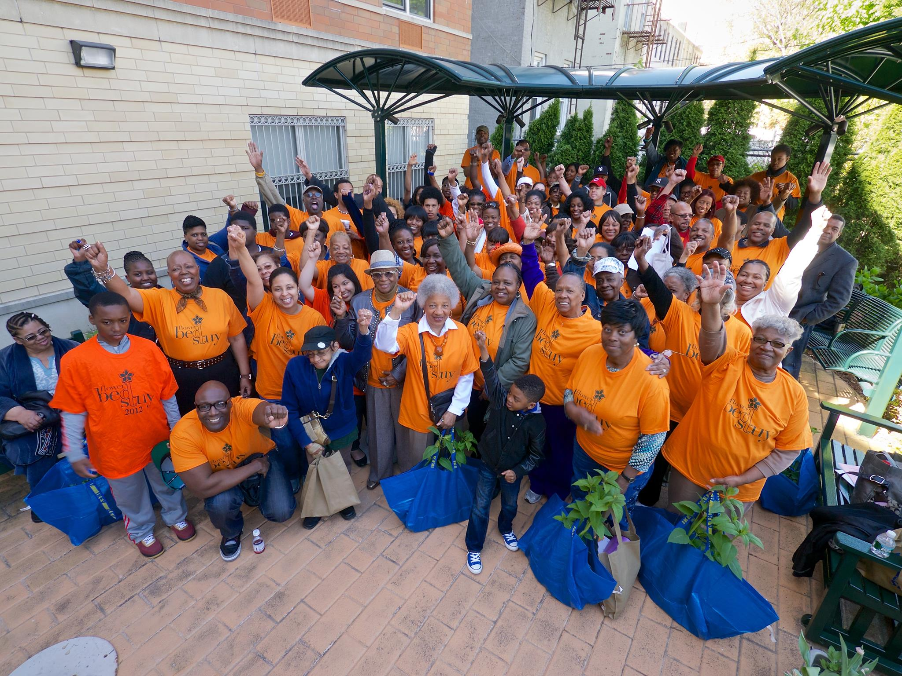

About
Bridge Street Development Corporation was established in 1995 to develop affordable housing. Bridge Street Development Corporation (BSDC) is a faith-based, 501(c)(3) not-for-profit organization whose mission is to build partnerships with businesses, government, and other community stakeholders to provide civic and economic opportunity.
Bridge Street Development Corp. vision is to preserve Bedford-Stuyvesant as a desirable neighborhood for raising families, owning businesses and taking part in rich cultural, spiritual and recreational opportunities. Our motto, "Building on Community Strength," describes our core belief that the most effective way to improve a community is to develop and promote local assets, including people, homes, businesses, and organizations.
The members of the Bedford-Stuyvesant Youth, Education and Safety Task Force will work toward the creation of a crime-free community by engaging both the community and law enforcement entities in meaningful and long-lasting initiatives that will bring about positive change.
Since its inception in 2006, the Bedford-Stuyvesant Safety Task Force (now the Youth, Education, and Safety Task Force) has had a close working partnership with the Bridge Street Development Corporation. Staffs from Bridge Street have been instrumental in the development and support of the Malcolm X Merchants' Association, which led to the transformation of Malcolm X Boulevard from a crime-ridden "hot spot" where guns and drugs were openly sold, and youth gangs menaced the store owners and residents.
With the participation of the 81st Precinct, Community Board 3, elected officials, and the Bainbridge Street Block Association, this once-thriving commercial corridor has experienced a major reduction in crime. Malcolm X Boulevard is now home to several new businesses, and Bridge Street continues to provide technical assistance to the Merchants' Association.
The BedStuy Works Alliance
Follow us on Facebook.
The BedStuy Works Alliance of Block and Tenant Associations began in 2010 as a small collaborative of block and tenant groups. The alliance is the result of the dynamic partnership between the Bedford-Stuyvesant Youth, Education, and Safety Task Force and the Bridge Street Development Corporation. Both groups had the common long-term goal to strengthen and galvanize block and tenant associations for the purpose of establishing a unified voice that would:
- Identify issues that impact tenants and homeowners
- Provide a forum for common concerns
- Generate ideas that would contribute to the ongoing revitalization of Bedford-Stuyvesant
- Advocate for improvements/change in a cohesive and proactive manner
- Strengthen existing civic initiatives such as the Community Board and the 79th and 81st Precinct Councils
- Improve police-community relations in order to maximize safety services throughout the neighborhood

History

The historical neighborhood Bedford Stuyvesant in Brooklyn, N.Y. is the home to over 150,000 people. Largely an African American community, Bedford Stuyvesant also has people of Asian, Latino and European descent. This neighborhood is known for its beautiful brownstones that were built in the early 1900's and its rich culture. Many artists, musicians and community activists have come from this neighborhood. Any visitor will quickly see beautiful painted murals of political leaders and community advocates, hear the beating of drums and the songs from the many choirs located in the area.
Bedford Stuyvesant is a strong community thanks to the people that make it up. These residents have weathered the hard times of redlining, the slashing of government funds, and the crack epidemic. This community has also celebrated the good times of the thriving business corridors of the past, and the emergence of hip hop music that forever changed the mindset of the residents, and put many young people to work to make a positive difference on their peers.
Despite the lean and problematic years this neighborhood has always been civically minded. In the summertime, you could find evidence in one of the mainstays of Brooklyn: the Block Party. Associations from all across the neighborhood would organize this annual event that brought together families, friends and neighbors.
In addition to the block parties, these associations would organize around issues regarding crime and public safety, lack of or the increase of public services and all political issues of the time. They would also organize stoop sales and block cleaning efforts. Some block associations have been in existence for more than 40 years. Some of these block associations even create the many community gardens that are all over this progressive neighborhood.
Although the community has always been ahead of the pack in regards to community engagement, at times the associations have waned in strength and impact on the lives of their residents. Many reasons can be pointed out that lead to this decline of significance and impact. Some of the reasons include: officers having aged out, leadership relocated, the economy, shift of family dynamics, cuts to government funding, etc.
Today organized associations are needed more than ever. An active association leads to a stable, safer, community. Associations are the thread that creates a tightly knitted neighborhood. This is the type of neighborhood that many native Bedford Stuyvesant residents are used to and would like to pass on to the next generation. Thriving associations are the backbone to a community of which everyone can be proud to be a resident.
Events Calendar
Stay up to date with upcoming block association events, meetings, and community gatherings in Bedford-Stuyvesant.
Block Association Map
Block Association Resources
The Bed-Stuy Works Alliance offers free workshops for residents who want to start a new block or tenant association, or strengthen an existing one. Workshops are typically held after work hours on Zoom, on an as-needed basis. Feel free to reach out with your interest and we will get in touch about our next workshop.
Interested in attending a workshop?
Reach out to us at info@bsdc.org
Our Workshops
Starting a Block Association
A strong block association starts with a clear mission and a good first meeting. In this workshop we cover how to write a mission statement, set short- and long-term goals, draft simple bylaws, elect officers (president, vice president, secretary, and treasurer), and organize your kick-off meeting. We talk through how to recruit neighbors door-to-door, designate building captains, and form committees around the issues your block actually cares about — safety, beautification, sanitation, youth, seniors, and more. Open to any Bed-Stuy resident ready to get organized.
Growing an Existing Association
For associations already up and running, this workshop focuses on what it takes to go further. We cover how to run meetings people actually want to attend, build and document projects, deepen outreach through door-to-door canvassing and building captains, and expand into programs for youth, seniors, and block beautification. We also discuss how to raise funds through dues, block parties, local merchants, and grants — and how to strengthen your ties with Community Board 3 and the 79th and 81st Precincts. Bring your officers and come as a group.
Past Workshops
Community Resources Map
Community Organizations
Community Board 3
CB3 represents Bedford-Stuyvesant (Flushing Ave to the north, Broadway to the northeast, Saratoga Ave to the east, Classon Ave to the west, Atlantic Ave to the south). Holds monthly general board meetings, usually the 1st Monday of the month, September–June.
1360 Fulton Street, Brooklyn, NYPhone: 718-622-6601 · Open Monday–Friday, 9:00am–5:00pm
nyc.gov/brooklyncb3
79th Precinct Council
President: Kim Best. Meetings held the 4th Wednesday of the month at 7:00pm at Brooklyn Job Corps, 585 Dekalb Avenue.
263 Tompkins Avenue, Brooklyn, NY 11221Tel: (718) 636-6611
79th Clergy Council
417 Throop Avenue, Brooklyn, NY 11221Bridge Street Development Corp
A faith-based community development corporation whose mission is to help residents of Bedford-Stuyvesant acquire appreciating assets including real estate, businesses, and education.
Dr. Betty Shabazz ATTAIN Lab
A public computer lab offering free computer classes, adult education, and certifications.
700 Gates Ave, #1F, Brooklyn, NY 11221(718) 453-3243 · bsc.sunyattain.org
NYC Office of Emergency Management — CERT Team
Volunteers who assist response teams during emergencies and help associations develop emergency kits and evacuation plans.
nyc.gov/cert · Phone: 718-422-8585Elected Officials
For the full list of elected officials serving Community Board 3: nyc.gov/brooklyncb3 — Elected Officials ↗
Citywide
Mayor Eric Adams
Public Advocate Jumaane Williams
Comptroller Brad Lander
Boroughwide
Brooklyn Borough President Antonio Reynoso
Brooklyn District Attorney Eric Gonzalez
Federal
U.S. Senator Charles E. Schumer
U.S. Senator Kirsten E. Gillibrand
Congresswoman Nydia Velasquez — 7th District
Congressman Hakeem S. Jeffries — 8th District
State
NY State Senator Jabari Brisport — 25th Senate District
NY State Senator Julia Salazar — 18th Senate District
NY State Assemblywoman Stefani Zinerman — District 56
NY State Assemblywoman Phara Souffrant Forrest — District 57
NY State Assemblywoman Latrice M. Walker — District 55
Local
Councilman Chi Ossé — Council District 36
Councilwoman Crystal Hudson — Council District 35
Councilman Lincoln Restler — Council District 33
Councilwoman Darlene Mealy — Council District 41
Housing & Tenant Resources
Fair Housing Counselors
Bedford Stuyvesant Restoration Corp
1368 Fulton Street, Brooklyn, NY 11216 · (718) 435-7585 (English, Spanish)
Brooklyn Neighborhood Improvement Association
465 Sterling Place, Brooklyn, NY 11238 · (718) 773-4116 ext. 11
Neighborhood Housing Services of Brooklyn
506 MacDonough Street, Lower Level, Nazarene Community Center, Brooklyn, NY 11233 · 718-919-2100
State Agencies
Dept. of Housing & Community Renewal (DHCR) — Brooklyn Borough Rent Office
55 Hanson Place, Room 702, Brooklyn, NY 11217 · (718) 722-4778
Housing Preservation & Development (HPD) — Call 311 to report building violations. nyc.gov/hpd
All state agencies: ny.gov
NYC 311
Call 311 to report problems with city services 24 hours a day, 7 days a week. Navigate all city agencies at nyc.gov.
Single Stop Centers
Single Stop provides free benefits screening, tax preparation (including EITC), legal counseling, and financial coaching at locations throughout Brooklyn. All sites offer family support and benefits counseling. More info: singlestopusa.org · Questions: 718-453-9490
Bed-Stuy Restoration Corp — Single Stop
1368 Fulton Street, 4th Floor, Brooklyn, NY 11216718-636-6942 · Mon–Fri 10am–6pm
Financial: Tue 3–6pm · Legal: Tue 2–5pm · Tax: Mon–Thu 11am–7pm, Sat 9am–5pm
St. John's Bread and Life — Single Stop
795 Lexington Avenue, Brooklyn, NY 11221718-574-0058 ext 110 · Mon–Fri 8am–5pm
Financial: 4th Tue of month · Legal: Tue 9am–12pm
S.C.O. at M.S. 35 Family Dynamics Beacon Center
272 MacDonough Street, Room 101, Brooklyn, NY 11233718-453-7004 · Financial & Legal: 2nd & 4th Mon 4–7pm
Health Leads at Woodhull Hospital — Single Stop
760 Broadway, Brooklyn, NY 11206718-630-3055 · Mon–Fri 9am–5pm
Make the Road NY (Bushwick) — Single Stop
301 Grove Street, Brooklyn, NY 11237718-418-7690 · Mon–Fri 9:30am–7:30pm
Employment Resources
For the full NYC top 100 workforce providers list: nycetc.org · Call 311 for referrals.
Key Brooklyn Workforce Agencies
Brooklyn Workforce1 Career Center — 9 Bond Street, 5th Floor, 11201 · 718-246-5219
Brooklyn Workforce Innovations — 621 DeGraw Street, 11217 · 718-237-2017 · bwiny.org
Brooklyn Bureau of Community Service — 285 Schermerhorn Street, 11217 · 718-310-5600
CAMBA — 1720 Church Avenue, 11226 · 718-282-2500 · camba.org
Opportunities for a Better Tomorrow — 783 4th Avenue, 11232 · 718-369-0303
The HOPE Program — 1 Smith Street, 4th Floor, 11201 · 718-852-9307
St. Nicks Alliance Workforce Development — 790 Broadway, 2nd Floor · 718-302-2057
Center for Employment Opportunities — 32 Broadway, NY 10004 · 212-422-4430 (probation/parole reentry)
The Fortune Society — 29-76 Northern Blvd, Queens · 212-691-7554 (reentry services)
Child Care Resources
Child Care Resource & Referral Agencies (CCRRs) help parents find providers matching their location, hours, and children's needs. Call 311 or visit ocfs.state.ny.us.
Child Development Support Corporation (CDSC)
352–358 Classon Avenue, 2nd Floor, Brooklyn, NY 11238718-398-6370 · Toll-free: 1-888-469-5999
cdscnyc.org
Day Care Council of New York
2082 Lexington Avenue, 2nd Floor, New York, NY 10035212-206-7818 · Toll-free: 1-888-469-5999
dccnyinc.org
Homeless Prevention Services
For emergency shelter, call 311. For eviction prevention resources: nyc.gov/dhs
Homebase — NYC DHS Eviction Prevention
Case managers assist with mediation, budgeting, emergency rental assistance, job training, and benefits advocacy. Brooklyn locations near Bed-Stuy:
CAMBA 1 — 1117 Eastern Parkway · 718-622-7323
CAMBA 3 — 1195 Bedford Avenue · 718-622-7323
RBSCC (Bushwick) — 90 Beaver Street · 718-366-4300
Emergency Rental Assistance & Legal Aid
NYC HRA can pay rental arrears for tenants facing eviction. Apply via 311 or nyc.gov/hra.
Coalition for the Homeless — Eviction prevention hotline (Wed from 9:30am): 212-776-2039
129 Fulton Street, New York, NY 10038
Community Service Society — 105 East 22nd Street, NY · 212-614-5375
Senior Centers
Call 311, visit cscs-ny.org, or the NYC Dept for the Aging for a full list.
Senior Centers — Zip 11216
Bridge Street Dev Corp — 460 Nostrand Avenue · 718-399-0146
NYCHA Armstrong Senior Center — 360 Nostrand Avenue · 718-789-9672
Stuyvesant Heights Senior Center — 69 McDonough Street · 718-230-0824
Fort Greene Grant Square Senior Center — 19 Grant Square · 718-363-3133
Decatur Grant Square Senior Center — 19 Rogers Avenue · 718-467-9590
Senior Centers — Zip 11221
Hope Gardens Multi-Service Center — 195 Linden Street · 718-455-1100
Roundtable for Senior Citizens — 1175 Gates Avenue, 3rd Floor · 718-443-7071
NYCHA Stuyvesant Gardens Senior Center — 150 Malcolm X Boulevard · 718-919-0279
Bridge Street AME Church HDFC — 864 Gates Avenue · 718-919-8583
Divinity Amour — 499 Quincy Street · 718-484-7027
Senior Centers — Zips 11233 / 11238
Brevoort Senior Center — 280 Ralph Avenue, 11233 · 718-467-7381
Hugh Gilroy Senior Center — 447 Kingsboro 4th Walk, 11233 · 718-756-8400
Berean HDFC — 1481 Saint Marks Avenue, 11233 · 718-498-2960
Atlantic Terminal Senior Center — 501 Carlton Avenue, 11238 · 718-857-0281
Grace Agard Harewood Senior Center — 966 Fulton Street, 11238 · 718-638-6910
Community Gardens & Greenmarkets
For garden info and maps: nycgovparks.org · greenthumbnyc.org · grownyc.org · GrowNYC Open Space: 212-788-7900
Community Gardens
Hattie Carthan Community Garden — 677 Lafayette Avenue, 11216 · 718-638-3566
Garden of Hope — 392 Hancock Street, 11216
NEBHDCo Community Gardens @ Kosciusko — 385–389 Kosciusko Street, 11221 · 718-453-9490
Bed-Stuy Community Garden — 95 Malcolm X Boulevard, 11221
Madison Street Community Gardens — 974 Madison Street, 11221
Halsey Street Community Gardens — 462 Halsey Street, 11233
Phoenix Community Gardens — 2037 Fulton Street, 11233 · 212-594-2155
Hollenback Community Garden — 460 Washington Avenue, 11238
Greenmarkets
BFM II Satellite at Irving Square Park — Wilson Ave & Halsey St · Sat 11am–4pm
Hattie Carthan Community Market — Marcy Ave & Clifton Place · July–Nov, Sat 9am–3pm
Malcolm X Blvd Greenmarket — Malcolm X between Marion & Chauncey · July–Nov, Sat 8am–3pm
Myrtle Ave Community Farm Stand — Myrtle Ave & North Portland Ave · July–Nov, Wed 4–7pm
Parks & Recreation
For full listings of parks, playgrounds, and recreation programs: nycgovparks.org
Swimming Pools
Kosciuszko Pool — 670 Marcy Avenue, 11216 · 718-622-5271
JHS 57/HS 26 Outdoor Mini Pool — Lafayette Ave at Stuyvesant Ave / Malcolm X Blvd, 11221
Bushwick Outdoor Intermediate Pool — Humboldt Street at Flushing & Bushwick Avenues
Community Development Corporations
For the full Brooklyn CDC directory: anhd.org
Bed-Stuy & Brooklyn CDCs
Bedford Stuyvesant Restoration Corp — 1368 Fulton Street, 11216 · 718-636-6900 · restorationplaza.org
Bridge Street Development Corp — 460 Nostrand Avenue, 11216 · 718-399-0146 · bsdcorp.org
Coalition for the Improvement of Bed-Stuy (CIBS) — 1360 Fulton Street, Suite 419, 11216 · 347-855-5822 · cibsbedstuy.org
Neighborhood Housing Services of Bed-Stuy — 1012 Gates Avenue, 11221 · 718-919-2100 · nhsnyc.org
Pratt Area Community Council — 201 DeKalb Avenue, 11205 · 718-522-2613 · prattarea.org
Ridgewood Bushwick Senior Citizens Council — 555 Bushwick Avenue, 11206 · 718-821-0254
Make the Road New York — 301 Grove Street, 11237 · 718-418-7690 · maketheroad.org
Fifth Avenue Committee — 621 DeGraw Street, 11217 · 718-237-2017 · fifthave.org
Brooklyn Congregations United — 890 Flatbush Avenue, 11226 · 718-287-4334
Brooklyn Neighborhood Improvement Association — 1482 St. Johns Place, 11213 · 718-773-4116 · thebnia.org